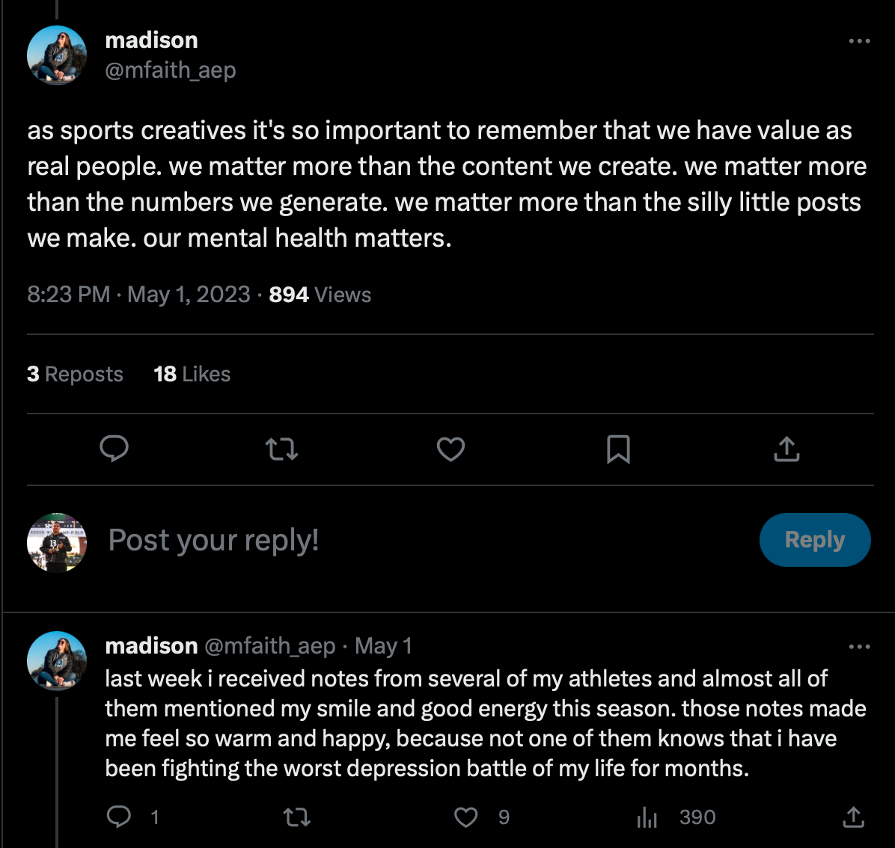
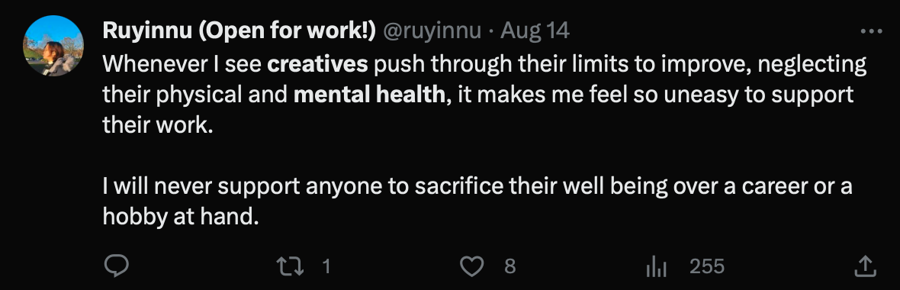
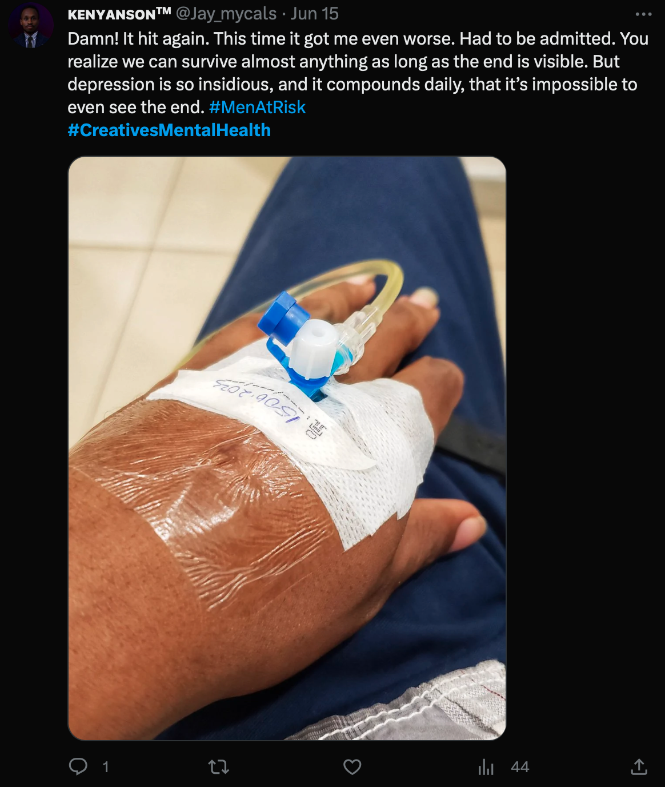

With the COVID-19 pandemic taking over the world in 2020, the world stood still and people lost their jobs all throughout the world. This caused an increase in mental health diagnoses, including a 25% increase in the prevalence of anxiety and depression in the world (WHO, 2022). With this as well, a study done by the American Psychological Association found that Americans harbor mainly positive views about mental health disorders and treatments and indicate a willingness to be more open about mental illnesses (American Psychological Association, 2019).
With this increase in willingness to be more open about mental illness and mental health, many more individuals are more likely to be open about their struggles with mental health and things that are straining their mental wellbeing. One such community that has become more open about the struggles of working in their field is the creative field, specifically in collegiate sports. One such method by which individuals in communities such as this are vocalizing these struggles is through X (formerly Twitter). Below are a few example screenshots of post:



As is visible from the screenshots above from, mental health is not only a serious threat to the livelihood of people in this community, but also a threat to their physical well being.
Along with this, mental health plays a significant role in the efficiency and productiveness in any team. Poor mental health and stress can affect job performance, productivity, engagement, communication and daily functioning. With prolonged mental health strain and burnout, other more serious mental health disorders can manifest in these individuals including sleep disturbances, headaches, infections, depression, suicidal idealization and anxiety.
The research on burnout is extensive including research into specific subsections of the world. Some such populations include medical workers, parents, educators and others which dive deep into the specifics of the details as to why these important sectors of society are increasingly finding their mental health at risk. However, there is little to no research in the topic of mental health in creative communities, a field that is seeing increasing mental health struggles, especially since the start of the COVID-19 pandemic.
References:
American Psychological Association. (2019, May). Survey: Americans becoming more open about mental health. Https://Www.Apa.Org. https://www.apa.org/news/press/releases/2019/05/mental-health-survey.
WHO. (2022, March 2). COVID-19 pandemic triggers 25% increase in prevalence of anxiety and depression worldwide. https://www.who.int/news/item/02-03-2022-covid-19-pandemic-triggers-25-increase-in-prevalence-of-anxiety-and-depression-worldwide.